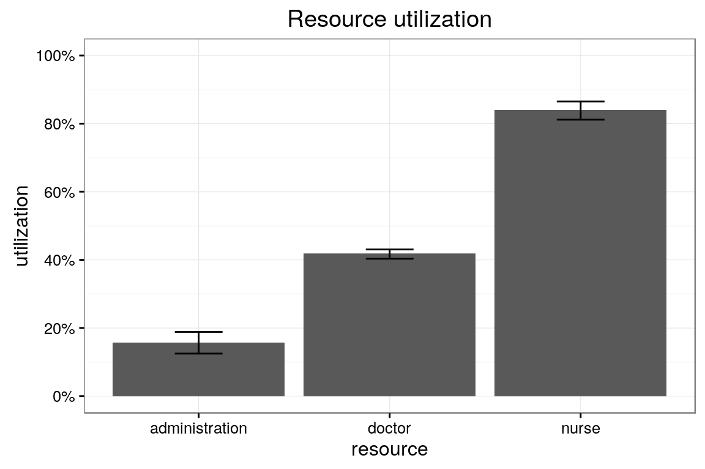
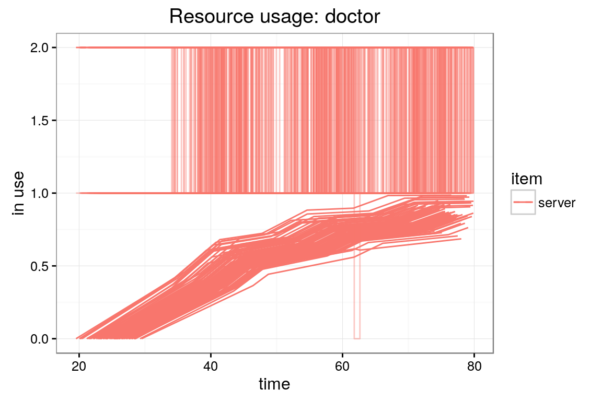
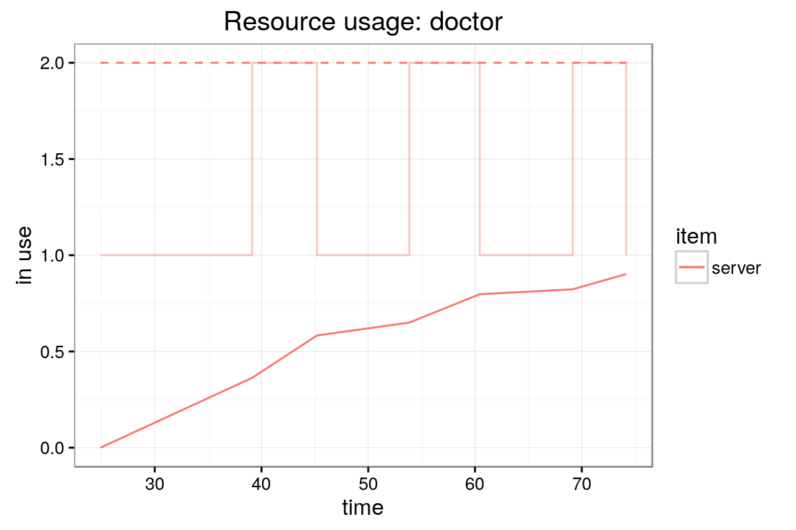
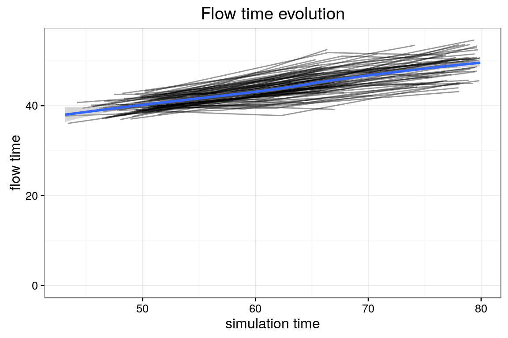

First, load the package and instantiate a new simulation environment.
library(simmer)
env <- simmer("SuperDuperSim")
env
#> simmer environment: SuperDuperSim | now: 0 | next:Set-up a simple trajectory. Let’s say we want to simulate an ambulatory consultation where a patient is first seen by a nurse for an intake, next by a doctor for the consultation and finally by administrative staff to schedule a follow-up appointment.
patient <- create_trajectory("patients' path") %>%
## add an intake activity
seize("nurse", 1) %>%
timeout(function() rnorm(1, 15)) %>%
release("nurse", 1) %>%
## add a consultation activity
seize("doctor", 1) %>%
timeout(function() rnorm(1, 20)) %>%
release("doctor", 1) %>%
## add a planning activity
seize("administration", 1) %>%
timeout(function() rnorm(1, 5)) %>%
release("administration", 1)In this case, the argument of the timeout activity is a function, which is evaluated dynamically to produce an stochastic waiting time, but it could be a constant too. Apart from that, this function may be as complex as you need and may do whatever you want: interact with entities in your simulation model, get resources’ status, make decisions according to the latter…
Once the trajectory is known, you may attach arrivals to it and define the resources needed. In the example below, three types of resources are added: the nurse and administration resources, each one with a capacity of 1, and the doctor resource, with a capacity of 2. The last method adds a generator of arrivals (patients) following the trajectory t0. The time between patients is about 10 minutes (a Gaussian of mean=10 and sd=2). (Note: returning a negative interarrival time at some point would stop the generator).
env %>%
add_resource("nurse", 1) %>%
add_resource("doctor", 2) %>%
add_resource("administration", 1) %>%
add_generator("patient", patient, function() rnorm(1, 10, 2))
#> simmer environment: SuperDuperSim | now: 0 | next: 9.96809937749893
#> { Resource: nurse | monitored: 1 | server status: 0(1) | queue status: 0(Inf) }
#> { Resource: doctor | monitored: 1 | server status: 0(2) | queue status: 0(Inf) }
#> { Resource: administration | monitored: 1 | server status: 0(1) | queue status: 0(Inf) }
#> { Generator: patient | monitored: 1 | n_generated: 1 }The simulation is now ready for a test run; just let it simmer for a bit. Below, we specify that we want to limit the runtime to 80 time units using the until argument. After that, we verify the current simulation time (now) and when will be the next 3 events (peek).
env %>% run(until=80)
#> simmer environment: SuperDuperSim | now: 80 | next: 84.0802201440091
#> { Resource: nurse | monitored: 1 | server status: 1(1) | queue status: 2(Inf) }
#> { Resource: doctor | monitored: 1 | server status: 1(2) | queue status: 0(Inf) }
#> { Resource: administration | monitored: 1 | server status: 0(1) | queue status: 0(Inf) }
#> { Generator: patient | monitored: 1 | n_generated: 8 }
env %>% now()
#> [1] 80
env %>% peek(3)
#> [1] 84.08022 84.39618 84.39618It is possible to run the simulation step by step, and such a method is chainable too.
env %>% onestep()
#> simmer environment: SuperDuperSim | now: 84.0802201440091 | next: 84.0802201440091
#> { Resource: nurse | monitored: 1 | server status: 0(1) | queue status: 2(Inf) }
#> { Resource: doctor | monitored: 1 | server status: 1(2) | queue status: 0(Inf) }
#> { Resource: administration | monitored: 1 | server status: 0(1) | queue status: 0(Inf) }
#> { Generator: patient | monitored: 1 | n_generated: 8 }
env %>% onestep() %>% onestep() %>% onestep()
#> simmer environment: SuperDuperSim | now: 84.0802201440091 | next: 84.0802201440091
#> { Resource: nurse | monitored: 1 | server status: 1(1) | queue status: 1(Inf) }
#> { Resource: doctor | monitored: 1 | server status: 2(2) | queue status: 0(Inf) }
#> { Resource: administration | monitored: 1 | server status: 0(1) | queue status: 0(Inf) }
#> { Generator: patient | monitored: 1 | n_generated: 8 }
env %>% now()
#> [1] 84.08022
env %>% peek(Inf, verbose=TRUE)
#> time process
#> 1 84.08022 patient5
#> 2 84.39618 patient
#> 3 84.39618 patient7
#> 4 88.38394 patient3
#> 5 104.65793 patient4Also, it is possible to resume the automatic execution simply by specifying a longer runtime. Below, we continue the execution until 120 time units.
Finally, you can reset the simulation, flush all results, resources and generators, and restart from the beginning.
env %>%
reset() %>%
run(until=80) %>%
now()
#> Warning in reset_(private$sim_obj): `patient5`: leaving without releasing
#> `administration`
#> Warning in reset_(private$sim_obj): `patient7`: leaving without releasing
#> `nurse`
#> Warning in reset_(private$sim_obj): `patient6`: leaving without releasing
#> `doctor`
#> Warning in reset_(private$sim_obj): `patient8`: leaving without releasing
#> `nurse`
#> Warning in reset_(private$sim_obj): `patient9`: leaving without releasing
#> `nurse`
#> Warning in reset_(private$sim_obj): `patient10`: leaving without releasing
#> `nurse`
#> Warning in reset_(private$sim_obj): `patient11`: leaving without releasing
#> `nurse`
#> [1] 80It is very easy to replicate a simulation multiple times using standard R functions.
envs <- lapply(1:100, function(i) {
simmer("SuperDuperSim") %>%
add_resource("nurse", 1) %>%
add_resource("doctor", 2) %>%
add_resource("administration", 1) %>%
add_generator("patient", patient, function() rnorm(1, 10, 2)) %>%
run(80)
})The advantage of the latter approach is that, if the individual replicas are heavy, it is straightforward to parallelize their execution (for instance, in the next example we use the function mclapply from the package parallel). Nevertheless, the external pointers to the C++ simmer core are no longer valid when the parallelized execution ends. Thus, it is necessary to extract the results for each thread at the end of the execution. This can be done with the helper function wrap as follows.
library(parallel)
envs <- mclapply(1:100, function(i) {
simmer("SuperDuperSim") %>%
add_resource("nurse", 1) %>%
add_resource("doctor", 2) %>%
add_resource("administration", 1) %>%
add_generator("patient", patient, function() rnorm(1, 10, 2)) %>%
run(80) %>%
wrap()
})This helper function brings the simulation data back to R and makes it accessible through the same methods that a simmer environment.
envs[[1]] %>% get_n_generated("patient")
#> [1] 9
envs[[1]] %>% get_capacity("doctor")
#> [1] 2
envs[[1]] %>% get_queue_size("doctor")
#> [1] Inf
head(
envs %>% get_mon_resources()
)
#> resource time server queue capacity queue_size system limit
#> 1 nurse 7.27690 1 0 1 Inf 1 Inf
#> 2 nurse 17.11353 1 1 1 Inf 2 Inf
#> 3 nurse 21.75310 1 0 1 Inf 1 Inf
#> 4 doctor 21.75310 1 0 2 Inf 1 Inf
#> 5 nurse 26.72686 1 1 1 Inf 2 Inf
#> 6 nurse 37.76386 1 0 1 Inf 1 Inf
#> replication
#> 1 1
#> 2 1
#> 3 1
#> 4 1
#> 5 1
#> 6 1
head(
envs %>% get_mon_arrivals()
)
#> name start_time end_time activity_time finished replication
#> 1 patient0 7.27690 45.93960 38.66270 TRUE 1
#> 2 patient1 17.11353 62.35411 40.60102 TRUE 1
#> 3 patient2 26.72686 77.41153 39.64767 TRUE 1
#> 4 patient0 12.35018 53.67720 41.32702 TRUE 2
#> 5 patient1 23.18705 68.35891 40.73435 TRUE 2
#> 6 patient0 10.03669 50.39108 40.35439 TRUE 3Unfortunately, as the C++ simulation cores are destroyed, parallelization does not allow to resume the execution of replicas.
This package provides some basic visualization tools to help you take a glance at your simulations quickly, but of course you probably may want to extract the RAW data with the functions shown above and develop your own data analysis.
For instance, after you’ve left it simmering for a bit (pun intended), we can have a look at the overall resource utilization. The top and bottom of the error bars show respectively the 25th and 75th percentile of the utilization across all the replications. The top of the bar shows the median utilization.
plot_resource_utilization(envs, c("nurse", "doctor","administration"))
It is also possible to have a look at a specific resource and its activity during the simulation.
plot_resource_usage(envs, "doctor", items="server", steps=T)
In the above graph, the individual lines are all separate replications. The step lines are instantaneous utilization and the smooth line is a running average. Let’s take a look now at a specific replication. In the example below the 6th replication is shown.
plot_resource_usage(envs[[6]], "doctor", items="server", steps=T)
Next we can have a look at the evolution of the arrivals’ flow time during the simulation. In the below plot, each individual line represents a replication. A smooth line is drawn over them. All arrivals that didn’t finish their entire trajectory are excluded from the plot.
plot_evolution_arrival_times(envs, type = "flow_time")
Similarly one can have a look at the evolution of the activity times with type = "activity_time" and waiting times with type = "waiting_time".